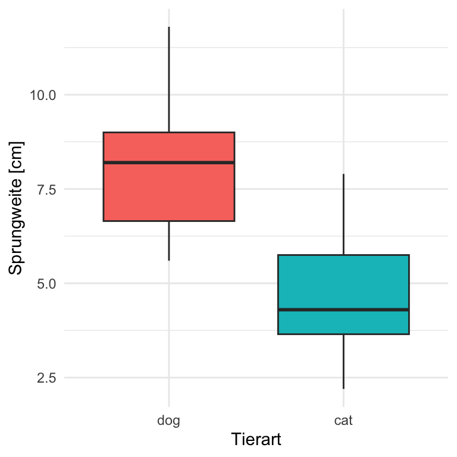
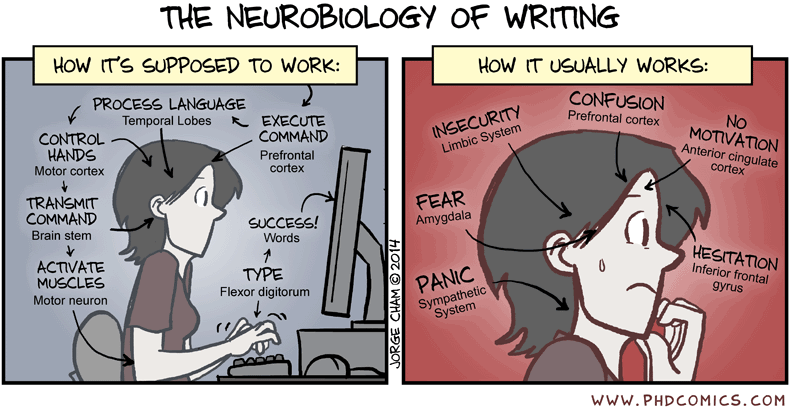
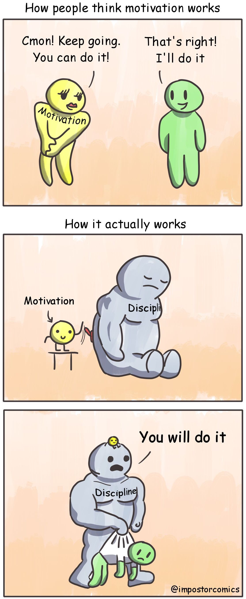
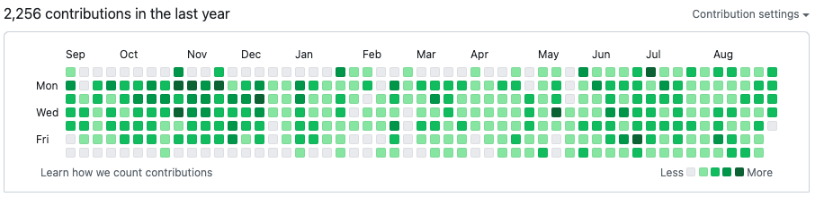
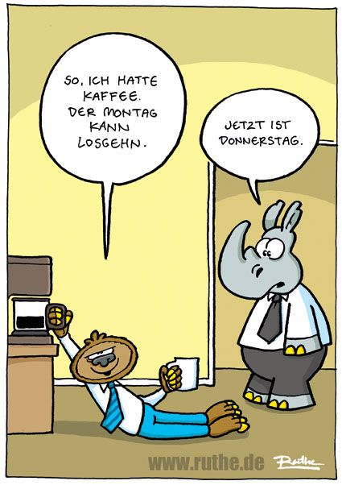
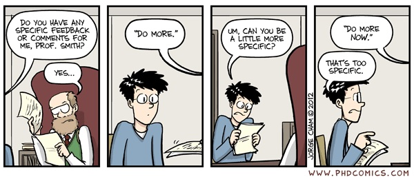
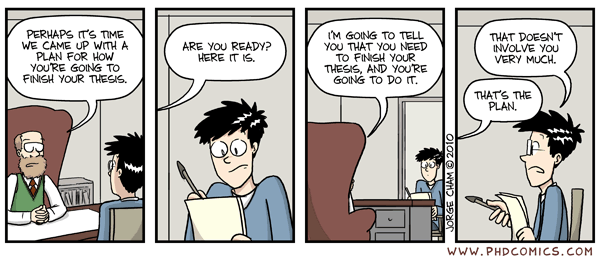
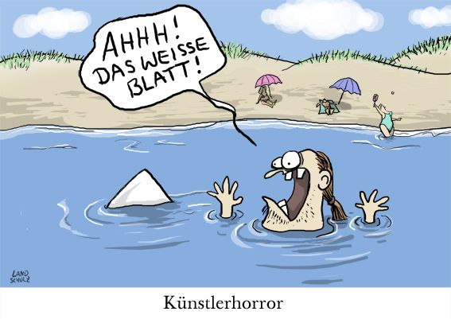
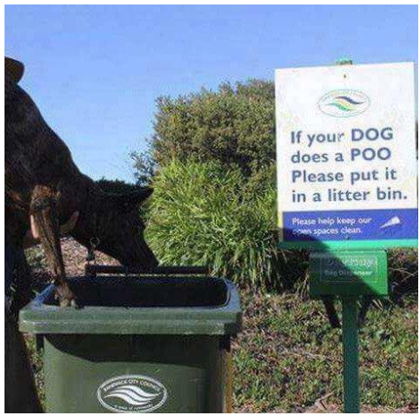
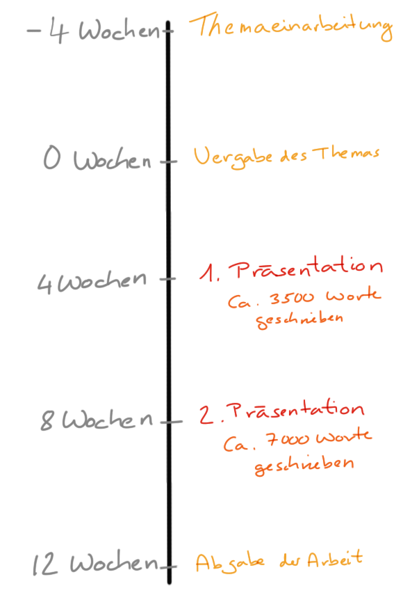

4 Abschlussarbeit
Letzte Änderung am 19. October 2023 um 18:43:44
“There is no such thing as a new idea. It is impossible. We simply take a lot of old ideas and put them into a sort of mental kaleidoscope. We give them a turn and they make new and curious combinations. We keep on turning and making new combinations indefinitely; but they are the same old pieces of colored glass that have been in use through all the ages.” — Mark Twain
Im folgenden Kapitel wollen wir einmal etwas theoretisch über deine Abschlussarbeit sprechen. Die Abschlussarbeit kann hier die Bachelorarbeit sein aber auch die Masterarbeit oder eine wissenschaftliche Veröffentlichung, die du schreibst. Dabei teilen wir dieses Kapitel grob in zwei Teile auf. Der erste Teil befasst sich mit deinem individuellen Forschungsprozess. Hier schauen wir eher theoretisch auf dich und deinen Arbeitsprozess. Eine Sammlung von Fragen erlaubt dir, den Prozess des wissenschaftlichen Arbeitens zu reflektieren. Der zweite Teil beschäftigt sich mit dem Schreiben deiner Arbeit. Beachte immer, am Ende gibst du eine geschriebene Arbeit ab. Egal wo und wie du was getan hast, am Ende zählt was du aufgeschrieben hast. Und schreiben ist nun mal nicht einfach. Oder um es in den etwas derben Worten von Ernest Hemingway zu sagen…
“The first draft of anything is shit.” — Ernest Hemingway
Hilfe durch die Studienberatung
Besuche das LearningCenter und lass dir helfen! Du bist nicht alleine mit deinen Problemen und Hilfe steht dir zu! Es gibt mehr und umfangreichere Hilfe als du glaubst.
Bei statistischen Fragen und der Versuchsplanung stehe ich dir unter j.kruppa@hs-osnabrueck.de helfend zur Seite. Frag mich einfach nach einem Termin. Meistens habe ich innerhalb von zwei Wochen Zeit.
How to read a book…
Gut, du kannst diese Worte hier lesen. Und ich konnte diese Worte hier schreiben. Wo ist das Problem? Nun mir ist gegen Ende meines Studiums aufgegangen, dass ich zwar Lesen kann, aber irgendwie dann doch nicht. Ein Buch von A bis Z durchzulesen ist das Eine, aber was zu Lernen dann schon was anderes. Adler und Van Doren (2014) haben schon sehr früh mit der Frage beschäftigt How to read a book (~1950) mit dem tollen Abschnitt Great books of the western world [p. 178ff]. Es gibt auch eine aktuellere Version unter How to read a book (1972). Wir immer findest du natürlich auch das Buch als gedruckte Variante. Für mich war es wertvoll nochmal darüber nachzudenken, wie ich richtig lese und damit lerne.
Der individuelle Forschungsprozess
“Ohne Kreativität gibt es keine Entwicklung.” — Commander Spock, Raumschiff Enterprise, Landru und die Ewigkeit
Wissenschaftliches Arbeiten ist nicht einfach. Aber es folgt einem Schema. Dabei ist das Forschen ein komplexer Arbeitsablauf, der aus verschiedenen miteinander verknüpften Aufgaben besteht. Teilweise müssen diese Aufgaben gefühlt parallel erfolgen, obwohl wir nur eine Aufgabe gleichzeitig bearbeiten können.
Die Ideen zum Forschungsprozess entstammen auch der Seite der Universität Leipzig - Methodenportal und anderen tollen Seiten.
Wissenschaftliches Arbeiten ist damit auch ein kreativer und offener Prozess. Ein kreativer Prozess erschafft Neues. Damit erschafft dein wissenschaftliches Arbeiten von dir mit geprägtes Neues. Wir bauen hier keine Tisch und Stühle mit Anleitung, denn wir kennen den Tisch oder den Stuhl, den wir bauen wollen, nur als vage Idee. Im Wissenschaftlichen Arbeiten gibt es wenig klare Ziele und vorgegebenen Schritte. Wir tasten uns förmlich im Nebel nach vorne und wollen Neues entdecken. Im wahrsten Sinne ein Abenteuer, den der Ausgang steht noch nicht fest.
Keiner kann dir sicher sagen, wohin deine Forschung führen wird. Auch ist der der genaue Weg von niemanden von Anfang an festgelegt. Zusätzlich dazu musst du den Anfang des Forschungsprozesses selbst finden, indem du ein Forschungsproblem identifizierst und definieren. In einer Bachelorarbeit mag dir mehr vorgegeben sein als in einer Promotion. Das kann dir Angst machen und das ist auch normal. Mir geht es auch immer so, dass ich am Anfang überwältigt von den Möglichkeiten des Forschens bin.
Wissenschaftliches Arbeiten kennt aber Regeln, die dir etwas Struktur bringen und dir dabei helfen dich zu fokusieren. Es ist nicht notwendig, dass du das Rad komplett neu erfindest, sei es in Bezug auf das Forschungsthema oder den Forschungsprozess. Stattdessen kannst du auf die Ergebnisse früherer Untersuchungen und die Erfahrungen anderer Forscher:innen zurückgreifen. Der Erfolg eines Forschungsprozesses hängt meistens von individuellen Faktoren und sachbezogenen methodischen Aspekten ab.
Bei dem wissenschaftliches Arbeiten muss der individuelle Forschungsprozess für dich und deine aktuellen Arbeitsprozesse berücksichtigt werden. Es ist leider nicht möglich, eine allgemeine Norm festzulegen, die einen gut funktionierenden und produktiven wissenschaftlichen Arbeitsprozess von einem schwierigen und bisweilen unproduktiven wissenschaftlichen Arbeitsprozess unterscheidet. Was für dich gut und richtig ist, kann für jemanden anders falsch sein. Wir können jedoch einige Faktoren benennen, die Einfluss auf die Produktivität des wissenschaftlichen Arbeitsprozesses haben könnten. Dazu werden wir gleich mal ein paar Fragen durchgehen, die dir helfen sollen dich zu reflektieren.
Die Auseinandersetzung mit deinem eigenen forschenden und schreibenden Handeln ist ein wichtiger Bestandteil des wissenschaftlichen Arbeitens. Dein Ziel muss es sein, den eigenen Arbeitsprozess aktiv und gesund zu gestalten. Sich selbst bewusst zu machen, was du mit welchem Effekt tut kannst und wie du dich dabei fühlt, ist hierfür ebenso Voraussetzung wie ein Nachdenken darüber, was du brauchst, um produktiv arbeiten zu können. Was sind also wichtige Faktoren bei dem Erstellen deiner Abschlussarbeit?
Emotion
“Wissenschaftliches Wissen, vor allem wenn es in Lehrbüchern steht, hat eine Aura der Objektivität - Es ist sicher, unbeeinflusst von dem, was wir vielleicht hoffen oder fürchten, und eine solide Behauptung dessen, was wahr ist. Zumindest sollten wir das glauben. Einmal gebildetes Wissen neigt dazu, sich von seinem menschlichen Ursprung zu entfremden. Das heißt, auch wenn das Wissen in Form von Büchern, Formeln, Beweisen, Theoremen und dergleichen bewahrt wird, dürfen wir nicht vergessen, dass vor all dem die Bildung von Wissen das Ergebnis menschlichen Denkens, menschlicher Anstrengung und menschlichen Verlangens war. Wissen ist ein Produkt menschlicher Hoffnungen und Ängste; unsere Emotionen sind entscheidend für seine Entwicklung, und seine Bedeutung kann nicht wirklich verstanden werden, wenn man es als ein blutleeres und emotionsloses Unternehmen betrachtet.” — Schimel (2012, aus dem Englischen)
Mit folgenden Fragen kannst du selber schauen, wie es dir mit deinen Emotionen bei der Erstellung der deiner Abschlussarbeit geht. Du kannst dir täglich oder wöchentlich aufschreiben, was die Abschlussarbeit mit dir emotional macht. Dann kannst du schneller reagieren und dir Hilfe holen. Auf und ab wird es auf jeden Fall gehen. Und dieses Auf und Ab ist auch vollkommen normal.
- Wie geht es dir, wenn du an deiner Abschlussarbeit arbeitest?
- Bei welchen Aufgaben fühlst du dich schlecht, unsicher oder überfordert?
- Welche Aufgaben erledigst du gerne und scheinbar wie von selbst?
- Siehst du einen Sinn in deiner Arbeit?
- Denkst du in Vor- oder Schaffensfreude an die nächsten Arbeitsschritte?

- Mehr von dem was klappt, weniger von dem was nicht klappt!
-
Notiere dir, was gut klappt und was eher nicht. Eine Abschlussarbeit besteht aus vielen Teilen und manchmal funktioniert eine Aufgabe nicht so richtig. Dann ist auch mal okay, gut genug. Also lass das Perfekte nicht der Feind des Guten sein. Konzentriere dich darauf erstmal alle Teile einer Abschlussarbeit zusammenzuhaben. Dann kannst du immer noch einzelne Abschnitte besser machen. Oder um es mal mit den Worten von Morgan (2006) zu sagen…
“Perfectionism is the voice of the oppressor, the enemy of the people. It will keep you cramped and insane your whole life, and it is the main obstacle between you and a shitty first draft. I think perfectionism is based on the obsessive belief that if you run carefully enough, hitting each stepping-stone just right, you won’t have to die. The truth is that you will die anyway and that a lot of people who aren’t even looking at their feet are going to do a whole lot better than you, and have a lot more fun while they’re doing it.” — Anne Lamott, Bird by Bird”
Motivation & Disziplin
“Disziplin bedeutet: Dinge, die man hasst, so tun, als würde man sie lieben!” — Mike Tyson
So schlimm wie bei Mike Tyson ist es bei mir nicht, aber dennoch eine persönliche Notiz von mir zur Motivation. Ich schreibe dieses Skript weniger mit Motivation sondern mehr mit Disziplin. Es gibt Kapitel, die gefallen mir und es gibt Kapitel, die schreibe ich zäh wie Honig. Jeden Tag versuch ich ein paar Worte oder Gedanken hier zu verfassen. Mal sind es mehr, mal weniger, aber es geht immer weiter voran. Word by word, step by step….
Aber bei dir kann das anders sein, zwölf Wochen für eine Bachelorarbeit sind eine Zeit, da klappt es meistens noch mit der Motivation und etwas Disziplin. Also hier ein paar Fragen, die dich herausfordern über deine Motivation nachzudenken.
- Frage dich, worauf fußt deine Motivation für die bevorstehende Arbeit?
- Ist die Arbeit für dich eher Pflicht oder Freude?
- Interessiert dich das Thema wirklich?
- Was motiviert oder demotiviert dich an deiner Arbeit insgesamt oder an einzelnen Aufgaben?
- Was bestärkt dich weiter zu machen, was verunsichert dich?
In der folgenden Abbildung 4.1 sehen wir nochmal den Unterschied zwischen der Motivation und der Disziplin dargestellt. Ein Text schreibt sich dann eben nur Wort für Wort und das dann jeden Tag für Tag.

In der Abbildung 4.2 siehst du meinen persönlichen Fortschritt des letzten Jahres (September 2022 bis September 2023) auf GitHub. Wie du siehst, habe ich versucht fast jeden Tag etwas zu schreiben oder aber für das Skript zu machen. In den letzten Monaten habe ich meine Rhythmus etwas geändert, da aus privaten Gründen mir täglich nicht mehr so viel Zeit bleibt. Auch ist es im Semester schwierig täglich substanziell zu schreiben. Da bin ich dann ja in der Vorlesung und spreche. So strecke ich dann eben alles Schreiben etwas auf jeden Tag. Ich schreibe eigentlich mittlerweile täglich oder mache etwas was mit dem Schreiben zu tun hat. Ziel ist es immer mindestens ein bedeutendes Commit bei GitHub pro Tag zu machen. Passt mir so mehr in meinen Rhythmus.

Arbeitsatmosphäre
“You don’t need special traits, special genes, or special motivation to write a lot. You don’t need to want to write–people rarely feel like doing unpleasant tasks that lack deadlines–so don’t wait until you feel like it. Productive writing comes from harnessing the power of habit, and habits come from repetition” — Paul J. Silvia, How to Write a Lot: A Practical Guide to Productive Academic Writing
Kennst du die Orte an der Hochschule wo du Arbeiten kannst, wenn es zu Hause nicht klappt? Vielleicht hilft es dir einfach mal zu Arbeit zu fahren und dich in ein Café oder Bibliothek zu setzen. Besuche doch einfach die Bibliotheken der Hochschule oder die Bibliotheken der Universität Osnabrück - reinsetzen kannst du dich ja überall. Teilweise findest du Lernlandschaften, die du dann auch nutzen kannst. Dann kannst du deine Arbeit von der Freizeit besser trennen. Hier nochmal ein paar Fragen, die dir dabei helfen können dich zu sortieren.
- Kannst du störungsfrei und konzentriert arbeiten oder wird dein Arbeitsprozess regelmäßig unterbrochen?
- Was längt dich ab? Bist du mehr im Internet oder bei Netflix als bei der Arbeit?
- Wann und wo arbeitest du am besten?
- Tauscht du dich mit anderen aus oder schreibst du alleine?
- Sprichst du mit anderen auch mal über dein Thema und deine Sorgen sowie Herausforderungen?

Oder du setzte dich einfach in einen Regionalexpress an die Küste und tippst im Zug. Dann isst du ein Eis am Meer und fährst wieder zurück. Mit etwas Glück ist das Internet so schlecht, dass du dich auch nicht so gut ablenken kannst.
Fähigkeiten & Wissen
“Some lessons have to be experienced to be learned.” — James Clear
Hier geht es jetzt eher darum sich nochmal zu sortieren, ob du alles hast was du brauchst oder aber dir nochmal Hilfe suchen möchtest. Teilweise wirst du feststellen, dass du im Prozess der Arbeit noch neue Fähigkeiten und Fertigkeiten brauchst. Das ist nicht schlimm, du kannst dann noch lernen und ergänzen. Wenn du aber gar keine Techniken kennst, dann kannst du diese auch nicht anwenden. Hier hilft wie immer das LearningCenter.
- Hast du die für deine Arbeit notwendigen Fähigkeiten und Fertigkeiten?
- Bist du in der Lage, dir diese anzueignen und vielleicht Unterstützung zu organisieren?
- Verfügst du über das für deine Arbeit notwendige Sachwissen sowie prozedurale Wissen?
- Welche Strategien und Techniken setzt du für dein persönliches Wissens- und Informationsmanagement ein?
- Könnte ein probeweise Strategiewechsel deinen Arbeitsprozess verbessern?
Hilfreich ist hier auch sich mit anderen Studierenden, die eine Bachelorarbeit schreiben, zu vernetzen. Du hast die Chance dich nochmal mit anderen auszutauschen und so zu sehen, wie es bei dir läuft. Auch musst du dann nicht alle Techniken selber herausfinden. Gemeinsam geht die Abschlussarbeit dann einfacher.
Warum nicht mit \(\LaTeX\) und Overleaf?
Warum nicht etwas Neues lernen und die Abschlussarbeit in \(\LaTeX\) schreiben? \(\LaTeX\) ist ein Textsatzsystem was wirklich wunderbare Dokumente erstellt. Und was noch besser ist, mit Overleaf steht eine kostenlose Onlinevariante zu Verfügung, die du einfach so nutzen kannst ohne viel zu installieren zu müssen. Deshalb schau doch einmal ins Tutorium Creating a document in Overleaf oder aber das Tutorium zum Bibliography management with bibtex. Dann hast du auch gleich eine Möglichkeit einfach deine Referenzen zu sortieren.
 Video ergänzen für Nutzung in Deutsch und Referenzen.
Video ergänzen für Nutzung in Deutsch und Referenzen.
Rahmenbedingungen
In diesem Block wollen wir gemeinsam raus finden was eigentlich die Rahmenbedingungen für deine Arbeit sind. Vielleicht hast du Kinder oder aber musst dich um wen kümmern. Musst du vielleicht nebenher noch Arbeiten oder hast noch andere ehrenamtliche Verpflichtungen? Dann schränken die Verpflichtungen dich naturgemäß ein. Die Fragen sollen deinen Blick nochmal für die Begleitumstände schärfen.
- Unter welchen sozialen und ökonomischen Rahmenbedingungen findet deine Arbeit statt?
- Haste du viel oder wenig Zeit?
- Hast du Vorwissen oder musst du dich komplett neu einarbeiten?
- Hast du einen Plan B für den Fall der Fälle?
- Erfährst du in deinem privaten Umfeld Unterstützung, Bestärkung oder Anregung?
Spreche deshalb auch offen mit dein:r Betreuer:in darüber. Es gibt Themen, die verlangen mehr Einarbeitung und Themen, die sich einfacher durchführen lassen. Sicherlich hat das Thema und die Schwierigkeit eine Auswirkung auf die endgültige Note, aber wenn du mehrere Bälle in der Luft halten musst, dann kann ein einfacheres Thema dich sehr entlasten. Sprich also im Zweifel einmal mit mehreren Betreuer:innen und schaue welche Themen die so anbieten.
Verhältnis zu den Betreuer:innen
“Kommunikation ist die Suche nach Übereinstimmung” — anonym

Kommen wir jetzt zum Punkt der Betreuung und dabei gilt, dass die Studierenden “eine Informations- und Mitwirkungspflicht” haben. Das heißt aber nicht, dass die Studierenden alles alleine machen sollen und am Ende drückt jemand eine Note auf die Arbeit. Deshalb informiere dich im Vorfeld bei anderen Studierenden wie die Dozenten so arbeiten und wie es so ist bei jemanden eine Abschlussarbeit zu schreiben. Jeder Dozierende ist anders und so findet sich auch jemand, der gut zu dir passt.
- Hast du ein gutes Verhältnis zu deiner Betreuerin oder deinem Betreuer?
- Ist er oder sie erreichbar?
- Sprechen wir die gleiche Sprache oder aneinander vorbei?
- Gibt es offene oder verborgene Konflikte?
- Bekommst du die Unterstützung, die du brauchst?
- Kannst du woanders Unterstützung finden?

Es funktioniert einfach mit der Betreuung nicht? Das ist nichts außergewöhnliches und kommt häufiger vor als du glaubst. Du bist da auch nichts besonders, dass kann jedem mal passieren, dass man jemanden nicht kann. Deshalb melde dich zeitnah beim LearningCenter oder deinem zuständigen Studierendensekretariat. Im Zweifel wechselst du dann nochmal die Betreuung.
Was ist zu tun?
“I hope that in this year to come, you make mistakes. Because if you are making mistakes…you’re Doing Something.” — Neil Gaiman
Na dann los… Moment… Was wollen wir jetzt eigentlich in welcher Reihenfolge machen? Das ist eine der wichtigsten Frage, deshalb auch hier am Schluss zusammen mit anderen Fragen, die sich mit dem Tun beschäftigen. Diese Fragen musst du dir vermutlich häufiger in deinem Arbeitsprozess stellen, denn meistens überlebt ein Plan den Kontakt mit der Realität nicht.
- Weist du, welche Aufgaben du zu bewältigen hast? Kennst du die grobe Reihenfolge der Aufgaben?
- Weist du, wie du diese Aufgaben bewältigen kannst oder wie du diese herausfindest?
- Planst du deine Arbeiten sinnvoll?
- Hast du dir einen groben Zeitplan gemacht und den Zeitplan mit jemanden besprochen?
- Wie hoch ist deine Frustrationstoleranz bei Problemen, Fehlern oder Verzögerungen?
Na dann mal los. Du weist ja jetzt, wo du dir Hilfe holen kannst. Und such dir Gleichgesinnte. Wer schreibt denn noch an einer Abschlussarbeit, wissenschaftlichen Veröffentlichung oder einem Bericht? Setzt euch zusammen und sprecht über eure gemeinsamen Erfahrungen und Herausforderungen.
“You may accumulate a vast amount of knowledge but it will be of far less value to you than a much smaller amount if you have not thought it over for yourself; because only through ordering what you know by comparing every truth with every other truth can you take complete possession of your knowledge and get it into your power.” — Arthur Schopenhauer, Essays and Aphorisms
Es ist nicht immer einfach und auch Albrecht Dürer (1471–1528) war sich nicht so sicher, ob er wirklich gut war. Und so schuf Dürer als eines seiner Werke um den Meistertitel zu erlangen den Holzstich Melencolia, zu sehen in Abbildung 4.3. Dürer stellt hier die erste Stufe des Genies dar, mit dem Willen zu Schaffen, aber unfähig zu tun.

Wichtigste Frage am Ende deiner Abschussarbeit…
Wenn du deine Abschlussarbeit nochmal mit deinem jetzigen Wissen von Vorne machen würdest, was würdest du alles anders machen?
Der individuelle Schreibprozess
“Dicke Bücher sind deswegen dick, weil der Autor nicht die Zeit hatte, sich kurz zu fassen.” — Walter Moers
Schreiben ist nicht einfach. Aber es folgt einem Schema. Schreiben ist anstrengend und dauert seine Zeit. Ein guter Text wird mehrfach revidiert, umgeschrieben und gelöscht, bis er zu einem guten Text geworden ist. Häufig vergehen mehrere Tage bis man eine Idee so auf das Blatt Papier gebracht hat, dass auch ein Dritter den Text lesen und verstehen kann.

Zentraler Gedanke
Der erste Entwurf ist für einen selber, ab dem zweiten geht es um den Leser.
Es geht also am Anfang erstmal darum, Text auf das weiße Blatt zu kriegen.
“Viele wissenschaftliche Themen kann man erst dann lösen, wenn man alle Aspekte explizit formuliert hat. Das Denken ist dafür insofern nicht genügend vorbereitet, als es immer nur kleine Ausschnitte fokussieren kann. Systematisch denken kann man nur, wenn man schreibt, also die Ergebnisse seines Denkens festhält und mit weiteren Aspekten in Beziehung setzt.” — Otto Kruse, Keine Angst vor dem leeren Blatt
Das ist die Idee vom Schreiben, wie sie von Otto Kruse so schön formuliert wird. Andere merken, wie weit du mit deinen Gedanken gekommen bist. Wir bringen komplexe Gedankengänge in die lineare Form des Textes.
Der Schreibprozess läuft dabei nach dem Beginn in den nächsten Wochen und Monaten in mehreren Phasen ab. In jeder Phase ist es wichtig, sich ein gutes Umfeld für konzentriertes Arbeiten zu schaffen, gleichzeitig aber die Kommunikation mit den Betreuenden und anderen Mitschaffenden nicht abreißen zu lassen.
Ein paar Videos, die mich motivieren…
Ich schreibe, du schreibst und wir schauen nicht YouTube Videos. Ende. Aber ich habe dann doch noch zwei Videos, die mich sehr inspiriert haben. Zum einen das Video über den Schreibprozess eines Buches 2 Years Of Writing A Book In 30 Minutes und nochmal ein Video über die Strukturierung des Lesens sowie des Schreibens mit Ryan Holiday’s 3-Step System for Reading Like a Pro.
Zeitplan
Hier ist es wichtig was geschrieben werden soll. Eine Bachelor- und Masterarbeit hat einen klaren Zeitplan, der vorab feststehen muss. Bis wann müssen wie viele Wörter geschrieben sein, damit die Arbeit fertig werden kann. Beide Abschlussformen haben ja unterschiedliche Zeitrahmen. Und das ist wirklich wichtig! Wann sollte man fertig sein mit Programmieren, wie lange soll man sich Zeit für Vortragsvorbereitung nehmen, etc. Auch eine wissenschaftliche Veröffentlichung hat einen Zeitplan! Leider – das ist der Primat der Forschung – kann sich der Zeitplan immer wieder ändern, wenn Methoden nicht klappen oder neue Erkenntnisse gewonnen werden. Dennoch muss klar sein, dass in endlicher Zeit – meist ein Jahr – ein Paper eingereicht werden kann. Auf dieses Ziel sollten sich alle Einschwören. Sonst ist eine Promotion in endlicher Zeit nicht machbar.
Ideen entwickeln
Man sammelt Ideen zunächst in der Breite und fokussiert dann, was davon man aufschreiben will. Man liest andere wissenschaftliche Paper, lernt vielleicht noch Grundlagen und Methoden, und macht sich Notizen, was interessant sein könnte, und wo es steht. Natürlich kann man sich bei den Betreuern und Mitschaffenden Hilfe und Anregungen holen, wo man Input herbekommt. Holen heißt aber nicht, dass man gebracht bekommt.
OCAR Prinzip
Frage dich, was ist das Opening (der Hintergrund der Arbeit), die Challenge (was ist das Problem, was gelöst werden soll?), die Action (was wirst du tun um dieses Problem zu lösen?) und die Results (Was kam dabei raus oder soll rauskommen?)
Strukturieren
Das grobe Gerüst ist ja vorgegeben. Eine wissenschaftliche Arbeit folgt dem IMRaD Schema. Erst die Einleitung (Introduction), dann die Methoden (Methods), gefolgt von den Ergebnissen (Results) und der Diskussion (Discussion). Am Ende der Einleitung wird nochmal die Fragestellung benannt. Welche Frage soll in der Arbeit beantwortet werden? Dann fehlt noch die Zusammenfassung am Anfang (abstract) und der Schluss bzw. das Fazit (conclusion). So ist das vorgegebene Schema für die Arbeit, das soll mit Inhalt gefüllt werden. Klingt erstmal einfach und ist es auch. Mit Zwischenüberschriften in den einzelnen Abschnitten kann man sich eine grobe Ordnung vorgeben, was in welcher Reihenfolge aufgeschrieben werden soll. Die Struktur innerhalb von Methodenteilen ist zum Beispiel oft gleich, Beschreibung der Studie, Beschreibung der interessierenden Variablen und ihrer Erhebung, Beschreibung der Auswertungsmethodik. Das kommt aber aufs Thema an. Und unterhalb dieser kann man sich wieder Unter-zwischen-unterüberschriften machen. Es wird sowieso noch alles überarbeitet.
Grobe Strukturierung nach IMRaD
- Zusammenfassung
- Einleitung
- Forschungsfrage
- Material und Methoden
- Ergebnisse
- Diskussion
- Literatur
Wenn es einen Flowchart gibt, so gibt dieser auch die Struktur vor. Ein Flowchart ist nicht final und ändert sich mit der Zeit! Mach den Flowchart am besten auf einem Blatt Papier. Da kannst du schneller was ergänzen.
Zeichne einmal den Ablauf deiner Arbeit auf ein Blattpapier
Zeichne einen Flowchart, der aufzeigt was in der Arbeit passiert!
Rohtexten
Das kann wirklich sloppy sein, in Stichpunkten oder hingerotzt, aber hier soll man sich auch nicht an Details aufhalten, sondern dem Arbeits- und Denkfluss folgen. Gerne auch Denglisch. Lieber erst Text schreiben und dann korrigieren. Wenn das Englische Wort nicht einfällt, das deutsche Hinschreiben. Den Schreibprozess nicht durch im Internet suchen und dann mal was Anderes gucken unterbrechen. Gerade wenn die Arbeit selbst noch im Entstehen ist, schreibt man erst einmal auf, was man tut, was man gemacht, gelernt, oder gelesen hat. Diese Frage stellt sich meist nach den ersten paar Sätzen in einer wissenschaftlichen Arbeit. Worum geht es hier eigentlich? Es könnte alles so einfach sein. Das ist normal. Durch das Aufschreiben werden einem meist die Dinge klarer und uns wird bewusst, wo wir nochmal genauer einhaken müssen.
Reflektieren
Die Grundideen sind jetzt schon mal auf dem Papier, jetzt muss man sich überlegen, wie daraus ein Text wird. Gut ist es, sich schon an dieser Stelle Feedback von Betreuern oder Kommilitonen zu holen. Das hilft auch, die eigene Perspektive auf den Text zu ändern und ihn aus mehreren Richtungen zu betrachten – was ist wichtig, was soll viel Platz einnehmen, was fehlt vielleicht noch?
Hinweis
Was könnte die zentrale Abbildung in den Ergebnissen sein?
Ein guter Ansatz um einen Fokus zu haben!
Jetzt schreiben wir! Wie geht es am besten?
Dafür geht gut die Hälfte der Schreibzeit drauf. Am wichtigsten sind Inhalt und Struktur, Korrektheit und Verständlichkeit dürfen aber auch nicht unterschätzt werden: Wir nutzen einfache englische Sprache. Das geschriebene Wort muss nicht schlau klingen, sondern der Inhalt muss schlau sein. Keine umständlichen, gekünstelten Verben verwenden, wenn es ein einfaches Verb auch tut. Wir machen es dem Leser einfach. Später wirst du in einem wissenschaftlichen Paper „we” schreiben, da man selten ein Paper alleine schreibt. Um das jetzt hier gleich am Anfang zu üben, schreibst du keine verschachtelten Passivkonstruktionen, sondern „I do/did something”. Das fühlt sich erst seltsam an, aber wir als Leser danken dir!
Schlecht
After the raw methylation data has been preprocessed, a student t test was used for the differential analysis.
Gut
I used the student t test for the differential analysis after the preprocessing of the raw methylation data.
Wir nutzen auch keine Pronomen, wo man nicht weiß, was diese Pronomen aussagen sollen. Was ist „it” oder „they”?

Schlecht
The dog and the cat walk into a house. It eats all the cookies.
Gut
The dog and the cat walk into a house. The cat eats all the cookies.
Wir führen alle Begriffe vorher ein, daher erklären wir diese Begriffe, bevor wir die Begriffe verwenden. Ja, mache Begriffe sind klar, aber welche das sind, ergibt sich manchmal erst auf Nachfrage bei uns und ist für einen Neuling in einem Fachbereich gar nicht zu wissen.
Schlecht
I analyzed the NGS data with an ANOVA after checking the residuals with a QQ-plot.
Gut
I analyzed the next generation sequencing data (NGS) with an analysis of variance (ANOVA) after plotting the residuals of the model in a quantile-quantile plot (QQ-plot).
Ist dir der Begriff nicht klar, erkläre ihn. Später können wir immer noch kürzen. Erkenntnisgewinn durch schreiben ist das Ziel.
Wer macht was? Die Frage des Lesers an jeden einzelnen Satz!
Komme in den ersten sieben Wörtern zum Punkt, wer was macht. Subjekt und Prädikat sollen nah beieinander sein und möglichst früh im Satz kommen. Wir schreiben kurze Sätze und vermeiden komplizierte Schachtelsätze.
Schlecht
The differential analysis of whole genome genetic data - like methylation pattern or expression analysis - has a long history of different invented methods and I used different analysis methods to find the best method for the analysis of methylation data with repeated measurements.
Gut
[1] A long history of different analysis methods like methylation pattern or expression analysis exists. [2] Hence, many scientist have invented different analysis methods of whole genome.
Löschen von Text
Text löschen macht keine Freude. Es ist immer nervig Teile des Textes, den man so mühsam in die Maschine getippt hat, zu löschen. Lege dir eine neue Datei an, in der du alles was du löschen willst reinkopierst. Bei mir heißt die Datei dump.docx oder dump.R oder auch anders. Auf jeden Fall löschst du so keinen Text, sondern bewahrst ihn erstmal auf. Denk immer daran, es geht nicht darum nur viel Text zu produzieren!
Zum Schluss kommen
Wie ich jetzt in diesem Augenblick musst du zum Schluss kommen. Kein Text ist perfekt, kein Gedankengang so klar niedergeschrieben, wie er sein könnte. Aber irgendwann muss gut sein. Lass das Perfekte nicht der Feind des Guten sein. Dieser Leitfaden ist good enough und somit muss es reichen. Viel Erfolg!
Erfahrungsbericht von ehemaligen Bachelorstudierenden
- keine neuen (wichtigen) Begriffe verwenden, wenn sie nicht vorher eingeführt wurden
- wenn man einen Begriff nicht richtig versteht oder nicht richtig erklären kann, sollte man ihn nicht verwenden. Daher ist es sehr hilfreich sich gründlich in den Hintergrund des Themas einzulesen.
- man sollte mehr wissen über das Thema, als man eigentlich im Text erklärt (um auf Fragen vorbereitet zu sein)
- Achtgeben auf die Zeitformen
- “it”, “they” und weitere Pronomen vermeiden, d.h. immer klar machen worauf man sich bezieht
- wenn etwas komplizierter scheint, sollte man Beispiele benutzen oder es eventuell graphisch darstellen. Aber: ein Bild nicht verwenden, wenn es keinen inhaltlichen Wert hat! Bringt dieses Bild etwas zum Verständnis des Lesers bei?
- in der Diskussion kein neues “Fass aufmachen”
- die Limitationen in der Diskussion im Fließtext “verstecken”
- die eigene Arbeit nicht schlecht reden; “schlechte” Resultate sind auch Resultate
- keine zu langen Sätze
- es sollte ein roter Faden in jedem Kapitel zu erkennen sein: Was ist das Ziel? Wie erreiche ich das? Was bringt mir diese Methode? Was sagen mir die Resultate (in Bezug auf mein Ziel)?
- und für die eigene Motivation: Es werden oft Schreibblockaden kommen, es wird oft frustrierend sein, weil vielleicht etwas umgeschmissen wird und man von vorne anfangen muss, etc., aber davon soll man sich nicht entmutigen lassen
- Der Text muss nicht gleich beim ersten Hinschreiben perfekt sein, sondern es hilft erstmal etwas drauflos zu schreiben um die Gedanken besser ordnen zu können
- ähnlich beim Programmieren: hier hat es mir auch geholfen einfach erstmal anzufangen und Ideen aufzuschreiben, aus welchen sich kann das Programm aufbauen kann
- Man sollte nicht zögern so etwas wie deepl (deepl.com) zu benutzen, wenn man mal mit einer englischen Formulierung nicht weiterkommt
- Man kann vor Beginn eines Tages ein realistisches Tagesziel (oder alternativ ein Wochenziel) festlegen, dann hat man ein Zwischenziel vor Augen und ist zufrieden mit sich, wenn dieses erreicht ist
Bachelorarbeit in der Bio Data Science
Wichtig - Bitte lesen!
Der folgende Text und die Anforderungen richten sich an eine Bachelorarbeit bei mir in der Bio Data Science. Keinesfalls handelt es sich hierbei um eine generische Hilfe oder Ratschläge, die sich verallgemeinern lassen. Bitte wende dich dazu vertrauensvoll an dein:e Betreuer:in.
Hier findest sich eine aktuelle Struktursammlung für die Bachelorarbeit in der Bio Data Science. Hier findest du keine Themen. Dafür musst du mich bitte ansprechen oder eine E-Mail schreiben. Die Themen finden sich dann etwa mit Kooperationspartern oder aber eher methodisch ohne echte Daten. Das müssen wir dann aber Absprechen, die Tendenz ist bei mir aber eindeutig Richtung Methodik und Simulationsstudien als echte Daten auswerten. Eins ist aber sicher, Experimente zur Datengenerierung mache ich keine.
Bitte halte Rücksprache, wenn dir Teile der Regeln für die Bachelorarbeit unklar sind.
- Ich empfehle die Arbeit in engischer Sprache zu verfassen.
- Die Bachelorarbeit umfasst einen Zeitraum von 12 Wochen. Bei Unsicherheit über das Thema kann einmalig eine 4-wöchige Einarbeitungsphase vereinbart werden. Danach wird das Thema der Bachelorarbeit konkretisiert.
- Der Umfang sollte die 40 Seiten nicht überschreiten.
- Die Arbeit umfasst ca. 30 Referenzen, davon sind die meisten aktuelleren Datums. Internetseiten zählen ausdrücklich nicht als Referenz.
- Im Rahmen der Betreuung finden jede Wochen ein kurzes Zoom-Treffen statt in dem der aktuelle Fortschritt der Arbeit besprochen wird.
- In der 4-ten Woche wird eine kurze Präsentation der bisherigen erarbeiteten Inhalte gegeben. Diese Präsentation kann in der 8-ten Woche erneut erfolgen.
- Mit einem methodischen Thema wird die Arbeit in Quarto in R oder in LaTeX in Overleaf geschreiben.
Im Folgenden siehst du nochmal den groben zeitlichen Ablauf in Abbildung 4.5. Der Ablauf dient der groben Orientierung, damit du auch weißt, wo du etwa stehst. Nach vier Wochen solltest du gut 3500 Wörter geschrieben haben und nach 8 Wochen ca. 7000 Worte. Damit solltest du dann am Ende auf die 30 Seiten mit ca. 10500 Worten kommen.

Bitte beachte auch die Hilfestellungen und die Erfahrungsberichte weiter oben, wo ich nochmal über Writing principles etwas aufgeschrieben habe. Vielleicht hilft dir das dann auch.
Korrekte Schreibweise von einer Formel
\[ y \sim x_1 + x_2 \]
mit
- \(y\) gleich dem gemessenen Frischgewicht in [kg/ha],
- \(x_1\) als der kontinuierliche Einflussvariable 1,
- \(x_2\) als der Einflussvariable 2 als Faktor mit den Leveln \(a\), \(b\) und \(c\).
Korrekte Beschriftung und Referenzierung einer Abbildung
In Abbildung 4.6 sind die Sprungweiten in [cm] von Hunde- und Katzenflöhen als Boxplots dargestellt.
Korrekte Beschriftung und Referenzierung einer Tabelle
| animal | jump_length |
|---|---|
| dog | 5.7 |
| dog | 8.9 |
| dog | 11.8 |
| dog | 5.6 |
| dog | 9.1 |
| dog | 8.2 |
| dog | 7.6 |
| cat | 3.2 |
| cat | 2.2 |
| cat | 5.4 |
| cat | 4.1 |
| cat | 4.3 |
| cat | 7.9 |
| cat | 6.1 |
In Tabelle 4.1 sind die Sprunglängen in [cm] in der Spalte jump_length von Hunde- und Katzenflöhen in der Spalte animal dargestellt. Insgesamt wurden \(n = 14\) Flöhe gemessen davon sieben Hundeflöhe und sieben Katzenflöhe. Wir haben ein balanciertes Design vorliegen.
Referenzen
Adler MJ, Van Doren C. 2014. How to read a book: The classic guide to intelligent reading. Simon; Schuster.
Morgan V. 2006. Bird by Bird: Some Instructions on Writing and Life. Journal of Applied Communications 90: 6.
Schimel J. 2012. Writing science: how to write papers that get cited and proposals that get funded. OUP USA.